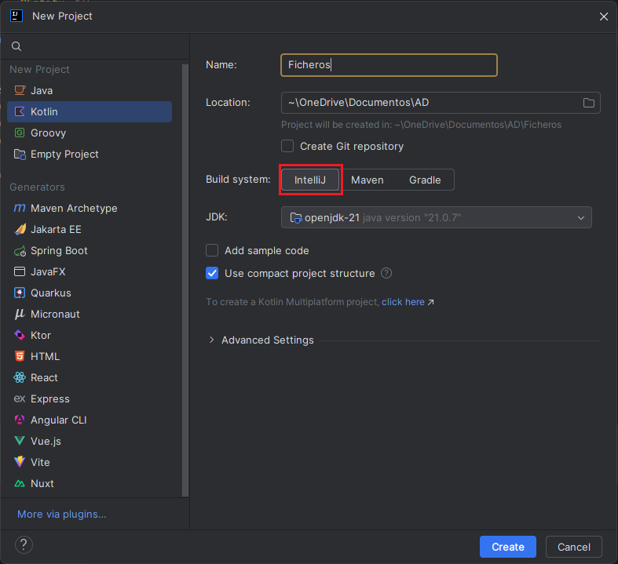

🔹IntelliJ IDEA Ultimate
IntelliJ IDEA ya lo conocéis, porque lo habéis estado utilizando en el módulo de programación de primero, no obstante, en el apartado de Instalación tenéis algunas indicaciones sobre su descarga e instalación.
En el apartado de Configuración tenéis las indicaciones para crear cada uno de los proyectos correspondientes a cada UD de este módulo.
🔹Instalación
En el momento de realizar estos apuntes la última versión es la 2025. El enlace para su descarga es https://www.jetbrains.com/idea/.
 |
 |
|---|---|
Seleccionamos Download y descargamos la versión Ultimate, que es la que nos proporcionará todas las herramientas para poder trabajar sin problemas.
Licencia
Para obtener una licencia de estudiante, que elimine la restricción de una versión de prueba de 30 días, es neceasario que la solicitéis en el enlace correspondiente y rellenéis los datos del formulario:
 |
|
|---|---|
🔹Configuración
Cuando creamos un nuevo proyecto en IntelliJ IDEA, el IDE nos ofrece diferentes configuraciones y plantillas iniciales: Java, Kotlin, proyectos con Gradle o Maven, aplicaciones Android, entre otras.
Gradle y Maven son unas herramientas de automatización de construcción de proyectos (build tool) muy utilizadas en el desarrollo de software.Se encargan de compilar, ejecutar, probar y empaquetar un proyecto, además de gestionar de forma automática las librerías externas que necesita.
En este módulo nos centraremos en estas configuraciones:
- Kotlin simple para ejercicios básicos.
- Kotlin con Gradle para manejo avanzado de ficheros y bases de datos.
- Kotlin con Maven y complemento Spring para proyectos web y APIs con Spring Boot.
| Sin Gradle | Con Gradle |
|---|---|
|  |
🔹Proyecto nuevo
Una vez elegida la configuración del proyecto según nuestras necesidades, se genera automáticamente la estructura de carpetas donde guardaremos nuestros programas. Dentro de la carpeta src podemos añadir directamente los archivos Kotlin o, si lo preferimos, crear paquetes para organizar mejor el código.
||
En los proyectos creados con Gradle la estructura de carpetas varía ligeramente. Para añadir nuestros programas debemos ir a la ruta src/main/kotlin, mientras que en la raíz del proyecto también se genera la carpeta resources (destinada a archivos auxiliares como datos o configuraciones) y los ficheros de configuración propios de Gradle, como build.gradle.kts.
| |
|
🔹Estructura de los proyectos por UD
Por cada UD se crearán uno o varios proyectos con una estructura fija para facilitar su corrección.
🔹UD Ficheros
En esta unidad crearemos dos proyectos:
-
Un proyecto sin Gradle, que llamaremos Ficheros, destinado a todos los ejemplos relacionados con el sistema de ficheros y el manejo de archivos. En este proyecto crearemos tres paquetes (sistema, contenido y formatos) para organizar los diferentes ejemplos.
-
Un proyecto con Gradle, que llamaremos Ficheros_Gradle, en el que trabajaremos con ficheros de distintos formatos.
A lo largo del tema se irá indicando en qué carpeta debe colocarse cada ejemplo.
| Proyecto Ficheros | Proyecto Fichero_Gradle |
|---|---|
 |
🔹UD BD Relacionales
Para esta unidad didáctica, crearemos un proyecto llamado BDRelacionales, configurado con Gradle. Este proyecto se utilizará para realizar todos los ejemplos y ejercicios relacionados con el acceso a bases de datos relacionales desde Kotlin.
Con el fin de mantener una estructura organizada y diferenciada según el tipo de base de datos, se crearán dos paquetes:
- Postgres: donde se incluirán todos los ejemplos orientados al uso de bases de datos PostgreSQL.
- SQLite: donde se desarrollarán los ejemplos utilizando bases de datos SQLite, tanto embebidas como externas.
En cada apartado se especificará en qué paquete debe desarrollarse cada ejercicio, según la base de datos utilizada.

🔹UD BD Documentales
Para esta unidad didáctica, crearemos un proyecto llamado BDNoSQL, configurado con Gradle. Este proyecto se utilizará para realizar todos los ejemplos y ejercicios relacionados con el acceso a Bases de Datos documentales desde Kotlin.
Con el fin de mantener una estructura organizada y diferenciada según el controlador utilizado, se crearán dos paquetes:
- mongo: donde se incluirán los ejemplos en los que se utiliza el driver oficial de Mongo.
- kmongo: donde se incluirán los ejemplos en los que se utiliza el driver KMongo.
En cada apartado se especificará en qué paquete debe desarrollarse cada ejercicio, según el controlador utilizado.